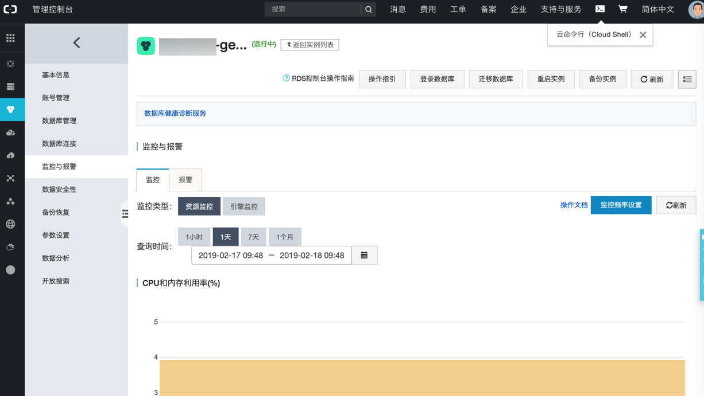
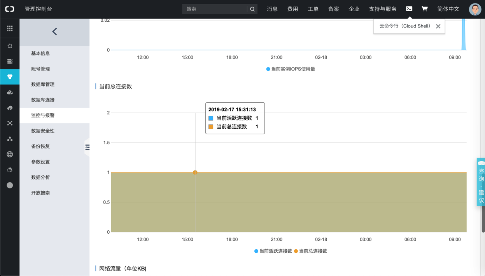

阿里云的RDS
此处整理关于阿里云的RDS的mysql数据库的内容。
RDS=Relational Database Service=关系型数据库服务=云数据库
心得
mysql监控
阿里云的RDS的mysql中，有自己的监控工具：

其中包括当前mysql的连接数：

备份阿里云的RDS的mysql数据库
此处去把，只能内网访问的阿里云的RDS的mysql数据库中某个表的数据，去备份到本地。
其实就是：
- 登录另外一台阿里云的ECS服务器
- 两者同属一个内网，本身有互相访问的权限
- 然后去执行
mysqldump去导出备份即可- 且（由于数据量很大，所以）用了
gzip压缩以减小文件体积
- 且（由于数据量很大，所以）用了
具体命令是：
mysqldump --host=xxx.mysql.rds.aliyuncs.com --port=port --user=root —-password=your_password --default-character-set=utf8 dbanme | gzip > aliyun_rds_xxx_mysql_dump.sql.gz
或-u的用户名和-p的密码的参数重去掉空格的写法：
mysqldump -h xxx.mysql.rds.aliyuncs.com -P port -B dbname -uroot -pyour_password | gzip > aliyun_rds_xxx_mysql_dump.sql.gz
常见问题
无法连接RDS
之前用
mysql -h xxx.mysql.rds.aliyuncs.com -P xxx -B xxx -uroot -p
结果：无法连上阿里云的RDS的MySQL数据库
原因：给参数时-uroot是错误的。
根本原因：给的参数是之前参考了mysqldump的写法
解决办法：把-uroot改为-u root，即可。
附录：
完整命令行是：
- 只登录，不选择指定哪个数据库
mysql -h xx-xxx.mysql.rds.aliyuncs.com -u root -p - 登录，且指定使用具体的数据库
mysql -h xx-xxx.mysql.rds.aliyuncs.com -u root -p dbname
连接报错：pymysql.err.OperationalError 2003 Can't connect to MySQL server on mysql.rds.aliyuncs.com Errno 61 Connection refused
此处Flask的python中pymysql去连接远程mysql数据库xxx.mysql.rds.aliyuncs.com出错：
File "/Users/crifan/.local/share/virtualenvs/robotDemo-HXjMJQEQ/lib/python3.6/site-packages/pymysql/connections.py", line 967, in connect
raise exc
pymysql.err.OperationalError: (2003, "Can't connect to MySQL server on 'xxx.mysql.rds.aliyuncs.com' ([Errno 61] Connection refused)")
原因：
这个mysql xxx.mysql.rds.aliyuncs.com 是阿里云的RDS数据库专用服务器，该名字是阿里云内网才能识别的名字，外网无法访问，只能内网（同处一个区域的服务器）访问。
解决办法：
- 开通外网访问权限
- 此处，为了更加安全考虑，就不去开放外网访问权限了
- 改为内网（甚至RDS本机）访问
- 阿里云后台可以针对RDS数据库申请外网IP，再去加上IP白名单，也可以实现很好的安全控制
- 所以采用：把服务器中的mysql，去用（登录阿里云ECS，和RDS数据库服务器同属于一个内网）mysqldump去导出子表，然后导入到Mac本地刚建mysql数据库，然后再去把配置改为：
config = { #'host': 'xxx.mysql.rds.aliyuncs.com', 'host': "127.0.0.1", 'port': 3306, 'user': 'root', 'password': 'xxxx', 'db': 'yourDB', 'charset': 'utf8', } - 即可正常连接